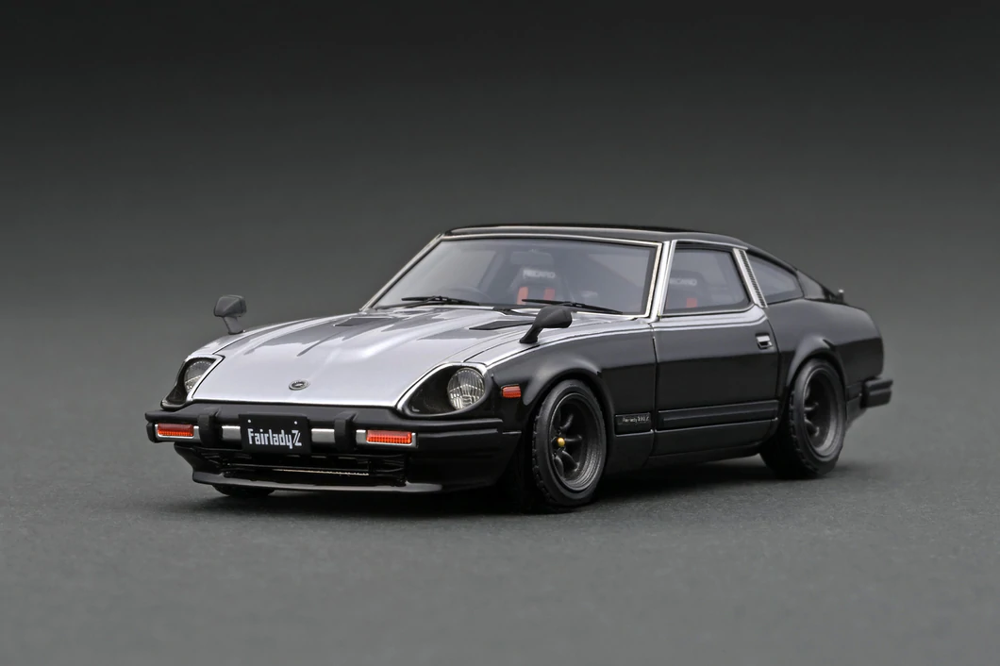

NISSAN

Nissan Motor Corporation, Ltd. (japāņu: 日産自動車株式会社 Nissan Jidōsha Kabushiki-gaisha) jeb Nissan (izrunā: [niːsɑːn][nepieciešama atsauce] vai nɪsæn; japāņu: nisːaɴ) ir Japānas autobūves uzņēmums.
Galvenais birojs atrodas Jokohamā.
Nissan ietilpst Renault—Nissan aliansē. 2013. gadā Renault piederēja 43,4 % balsstiesību uzņēmumā Nissan,
bet Nissan piederēja 15 % balsstiesību Renault. Abu uzņēmumu izpilddirektors ir Karloss Gons (Carlos Ghosn).
Nissan Motor izlaiž automašīnas ar zīmoliem
Nissan,Infiniti un Datsun. Tam ir arī motorsporta un tūninga lietu ražotājs Nismo.
Nissan Motor Corporation akcijas tiek kotētas Tokijas fondu biržā (kods 7201).
Lielākie akcionāri 2015. gadā bija: Renault (43,4 %), Daimler AG (3,10 %), Dodge & Cox (2,13 %).
vēsture
1933. gada 26. decembrī japāņu uzņemējs Aikava Jošisuke apvienoja autodaļu ražotājus Nihon Sangyo un Tobata Casting vienā uzņēmumā Jidosha Seizo Co., Ltd.. 1934. gada maijā Jokohamā pabeigta rūpnīcas celtniecība. Jūnijā uzņēmuma nosaukums mainīts uz Nissan Motor Co., Ltd.[2] Rūpnīca ražoja vieglās un kravas automašīnas, kā arī autobusus.
Otrā pasaules kara laikā 1943. gadā uzņēmums pārtrauca izlaist automašīnas. 1944. gada septembrī uzņēmuma galvenais biroja pārcelts uz Tokiju, un nosaukums mainīts uz Nissan Heavy Industries, Ltd. Ražošana atjaunota 1945. gada novembrī. 1946. gada janvārī galvenais birojs atgriezās Jokohamā. 1949. gadā atjaunots uzņēmuma nosaukums Nissan Motor Co., Ltd.
1950. gadā Nissan iegadājās dīzeļdzinēju ražotāju Minsei Diesel Motor Co., Ltd. (tagad Nissan Diesel Motor Co., Ltd.). Korejas kara laikā Nissan bija viens no lielākajiem automašīnu piegādātājiem ASV armijai. Pēc kara uzņēmums nokļuva finansiālas grūtībās, un darbinieku algas tika pazeminātas. Strādnieki sarīkoja streiku. 1958. gadā sākta pasažieru automašīnu eksports uz ASV. 1959. gadā Taivānā atvērta pirmā Nissan ārzemju rūpnīca.
1966. gadā Nissan apvienojās ar Japānas autoražotāju Prince Motor Company.
1970. gada 11. februārī ar Nissan izgatavoto raķeti Lambda-4S palaists Japānas pirmais pavadonis Ōsumi. 1970. gadā sākta jūras dzinēju ražošana.
1999. gadā Nissan noslēdza vienošanos par globālu aliansi ar Francijas autoražotāju Renault.
2016. gada 2. maijā paziņots, ka Nissan iegādāsies trešdaļu Mitsubishi Motors akciju.
Nissan tirzniecības centrs-
Nissan savstarpējās sacīkstes,starp trim dažādiem modeļiem
-ATGRIEZTIES